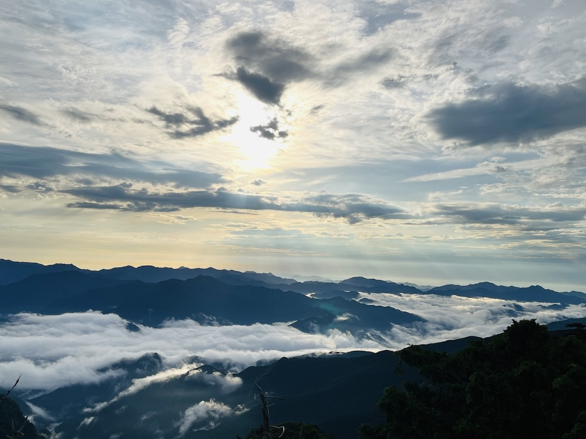
番組について
大阪・岸和田、標高10m。だけど心はいつも、山のてっぺんへ。ラヂオきしわだ（FM79.7MHz）からお届けする――登山・トレイルラン・ハイキングをテーマにした、ちょっとクセ強めの山ラジオ。関西の山の空気、土の匂い、息が上がるあの瞬間。
机の上じゃわからない“リアル”を、そのまま電波に乗せて届けます。山を語る番組はあっても、山を“生きてる途中”の番組は、たぶんここだけ。
この番組の核となるのは、ふたつのコーナー。
ひとつは――
「きわむし。のお疲れ山です」。毎回ひとつの山＝“一座”を紹介。その山の魅力、ルート、空気感まで、まるごと味わう時間。そしてもうひとつは――
「人生は縦走だ！」。ゲストを迎え、その人の歩いてきた道を“山”になぞらえて辿る時間。登りも、迷いも、分岐も含めて、その人だけの縦走ストーリー。
うまくいく日も、いかない日も、登りも、下りも、全部ひっくるめて前に進む。しんどいも、最高も、全部ザックに詰めて、日常と山のあいだを、きわきわに行き来する60分。今日も一日、お疲れ山です。ここからは――「山と生きる時間」です。
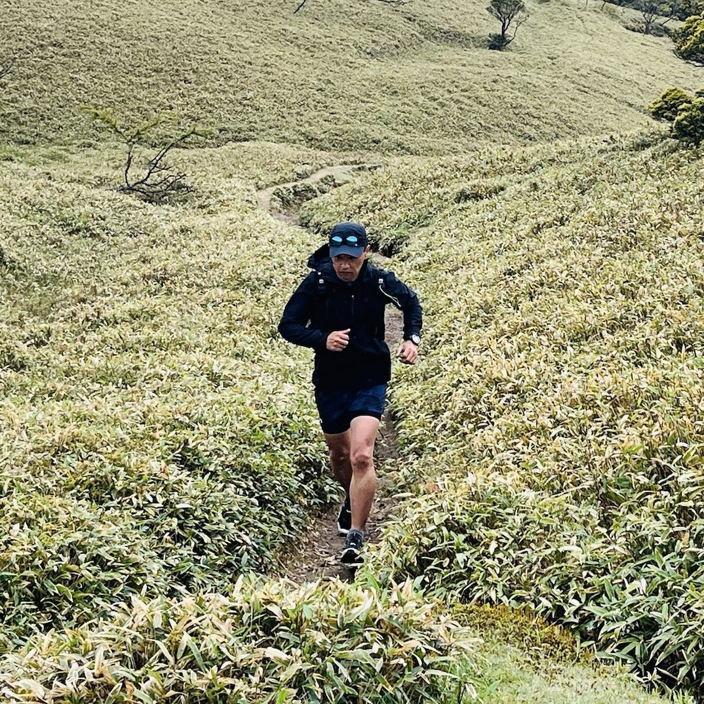
登山・トレイルランニングを愛するアウトドア系ラジオDJ。「山と音楽と乾杯」をテーマに、リアルな体験をベースにしたトークが特徴。
Hi, I'm きわむし。 - パーソナリティ
4月23日生まれA型。20代後半までの約10年、ニュージーランド、台湾、イギリスと渡り歩いて帰ってきました。番組では、"山と音楽と乾杯"をこよなく愛するDJきわむしがトレラン・登山・マラソン・ハイキング 情報などお届けします。
トレイルランニング
Trail Runner
連続起業家
Serial Entrepreneur
写真
Photographer
2004
☕ IT関連企業を起業
2024
☕ 大峯奥駈道（吉野〜熊野本宮）一撃走破 ／ 金剛練成会100回登拝表彰
2026
☕ ダイトレフォトコンテスト2025 優秀賞 春夏賞
☕
その他、研修会講師、高校非常勤講師、教育委員会委員、PTA会長など務めた経験あり。
番組コーナー
派手すぎない。でも、少しだけ――きわきわ。
こんばんは。『夕焼けMOきわきわタイム』です。山を語るラジオはあっても、山を“生きる”ラジオは、そう多くありません。登山、トレイルラン、ハイキング…ただの趣味じゃない。それは、生き方そのもの。山を語り、山を走り、山で生きる。仕事も、家事も、挑戦も、
すべてを「一座」として今日を登る。さあ――あなたは、今日という山を登りきりましたか？
写真 by きわむし。
昼夜問わず、山を走りながら撮ったお気に入りの写真。
- すべて
- 山
- 神社
- パーソナリティ
- フォトコンテスト
{kind=link}
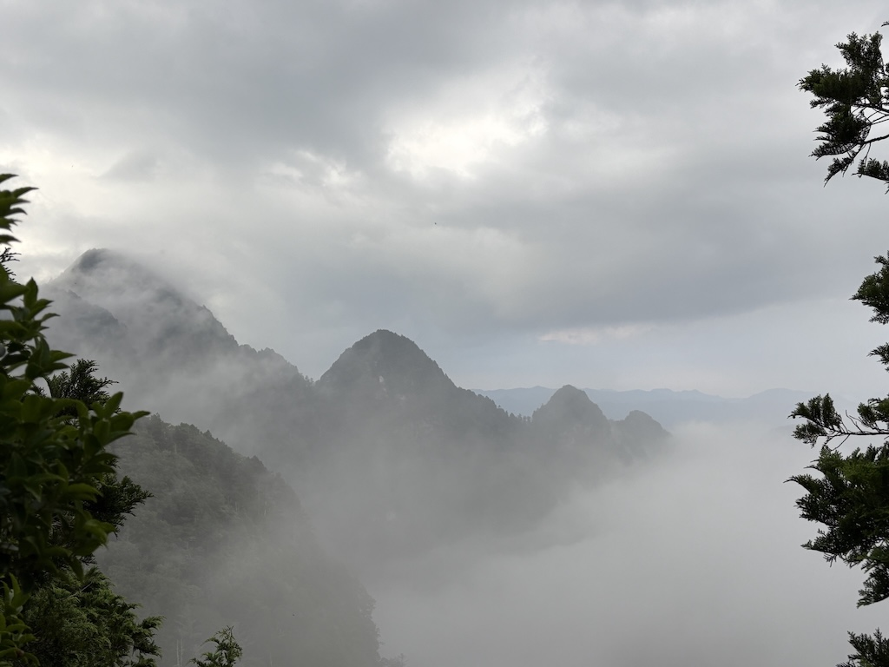
{kind=link}
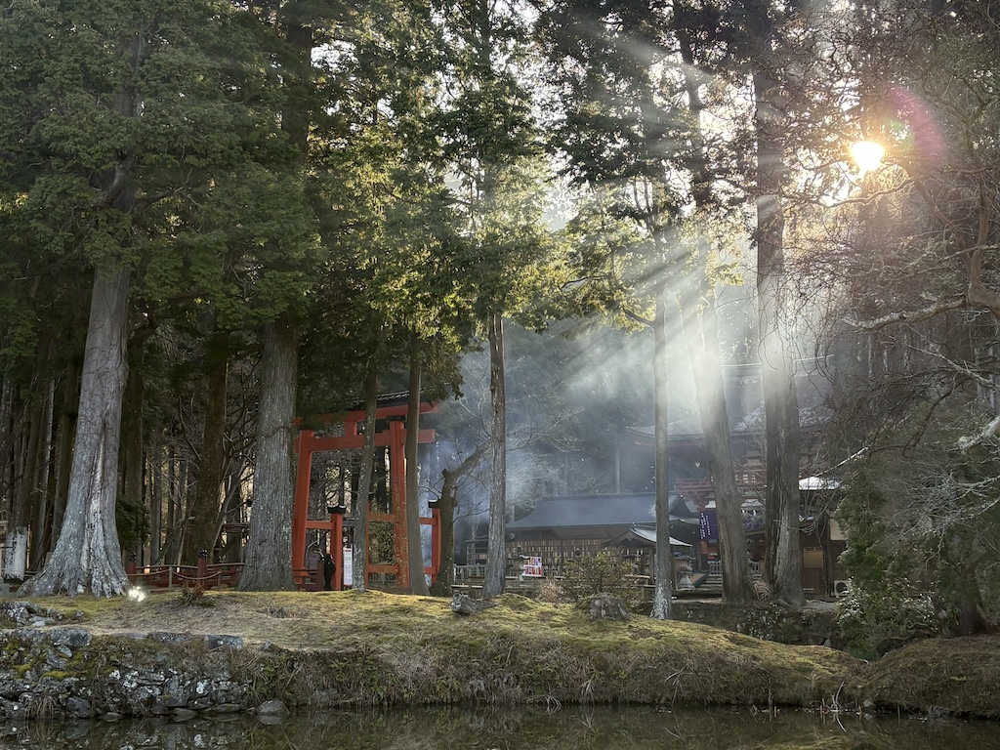
{kind=link}
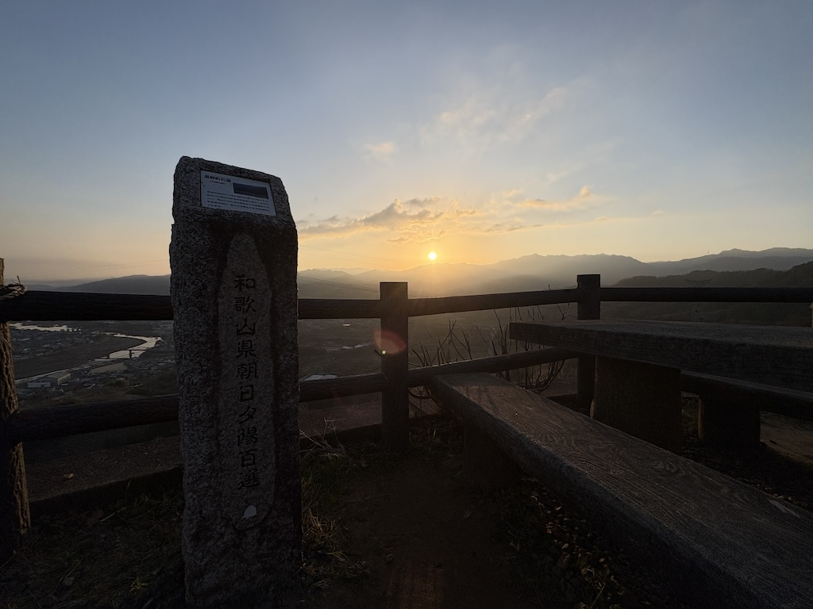
{kind=link}
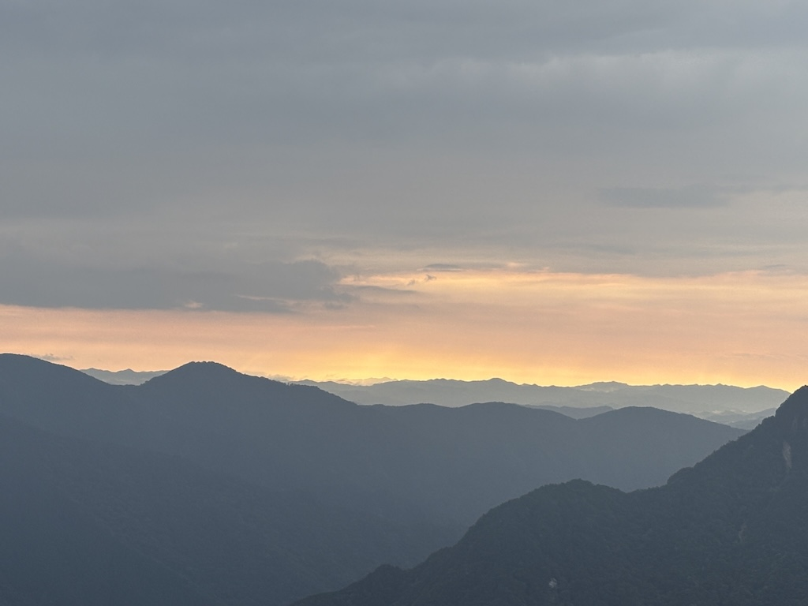
{kind=link}
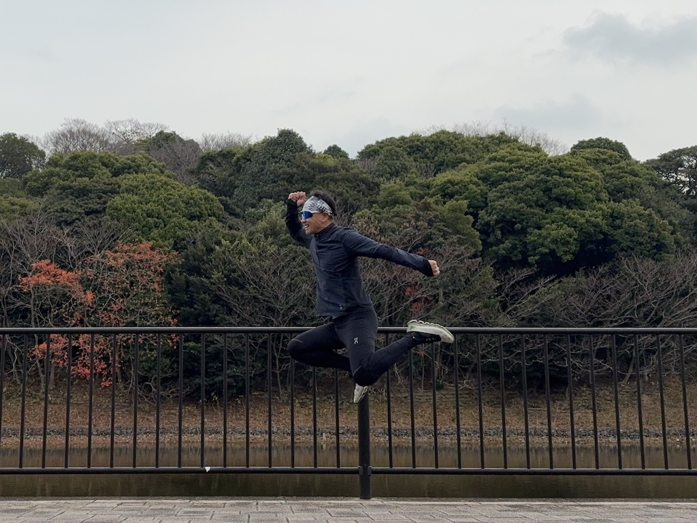
{kind=link}
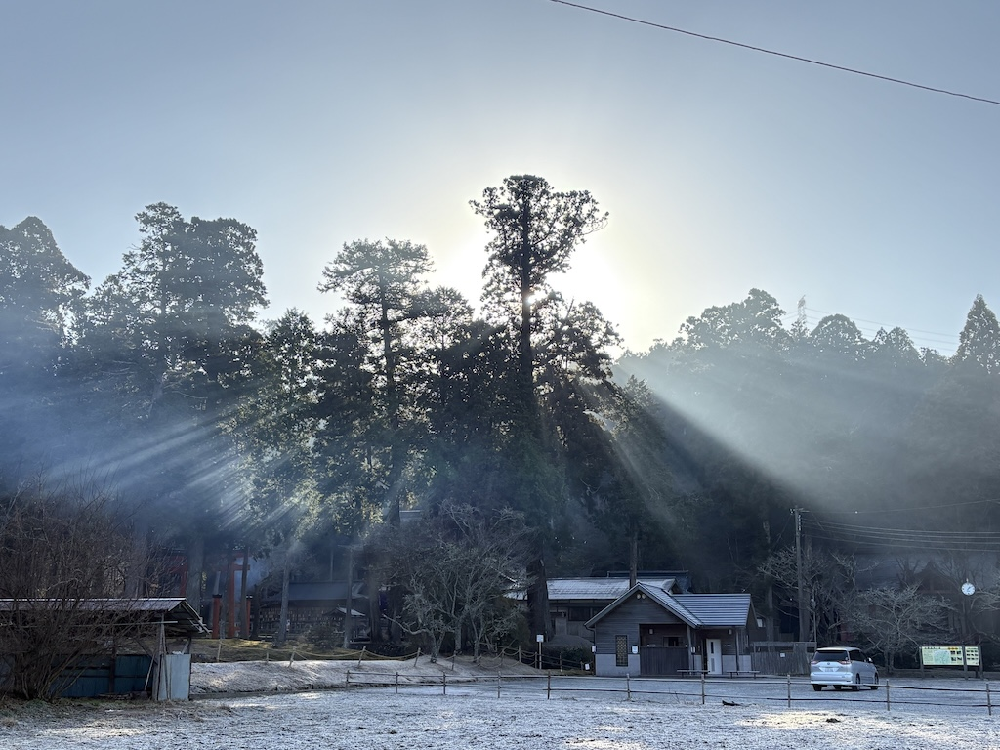
{kind=link}
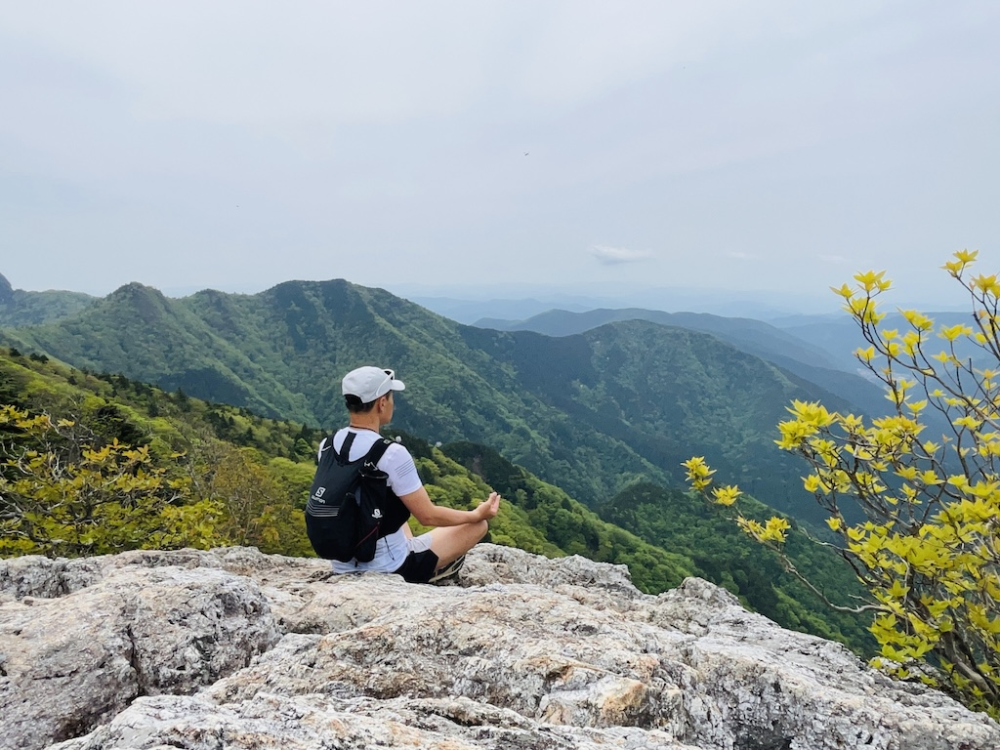
{kind=link}
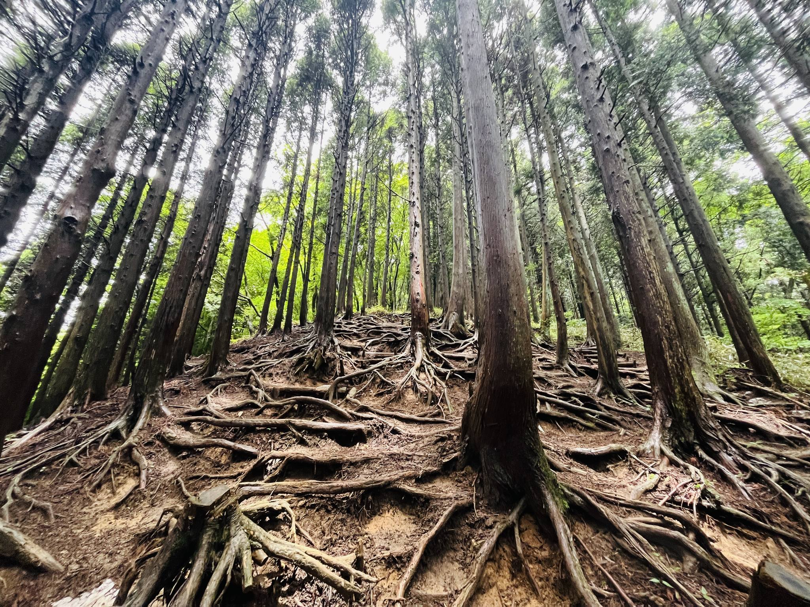
{kind=link}
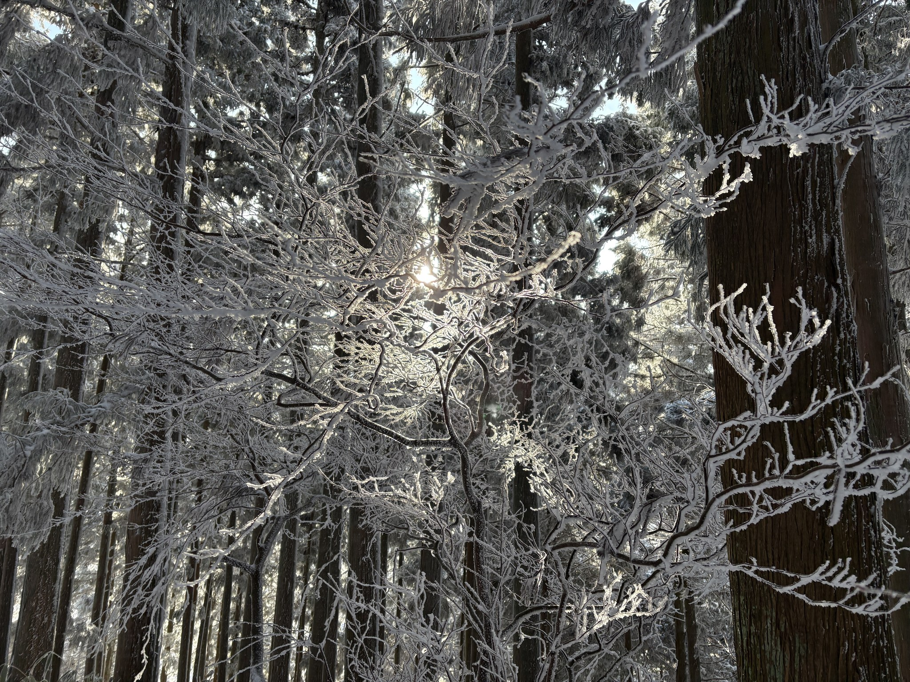
{kind=link}
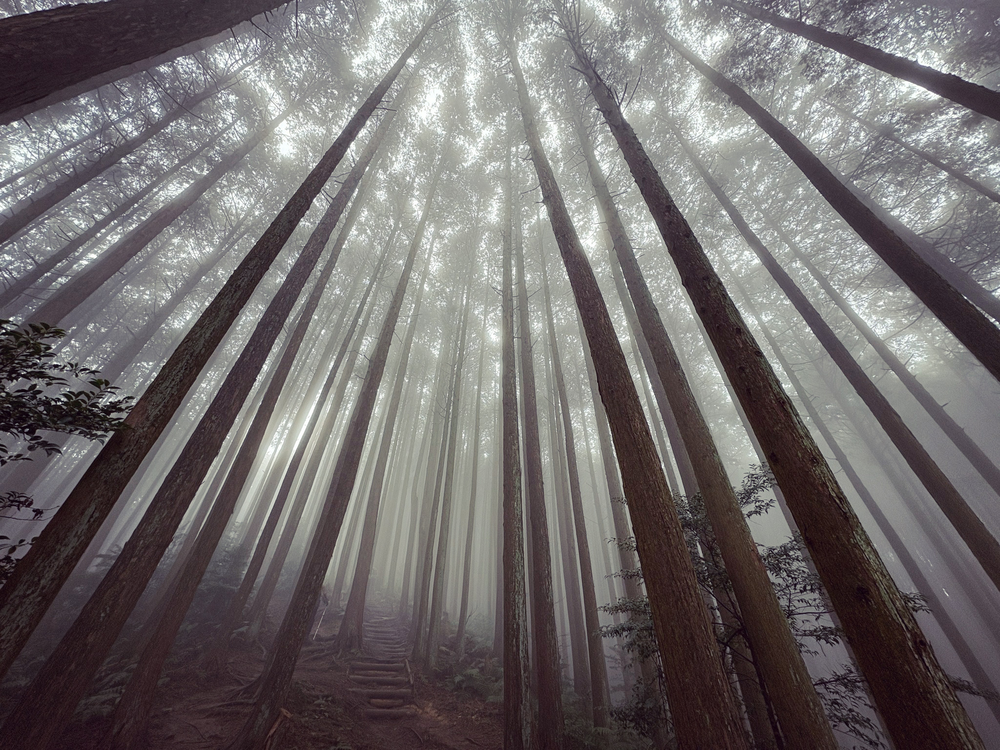
{kind=link}
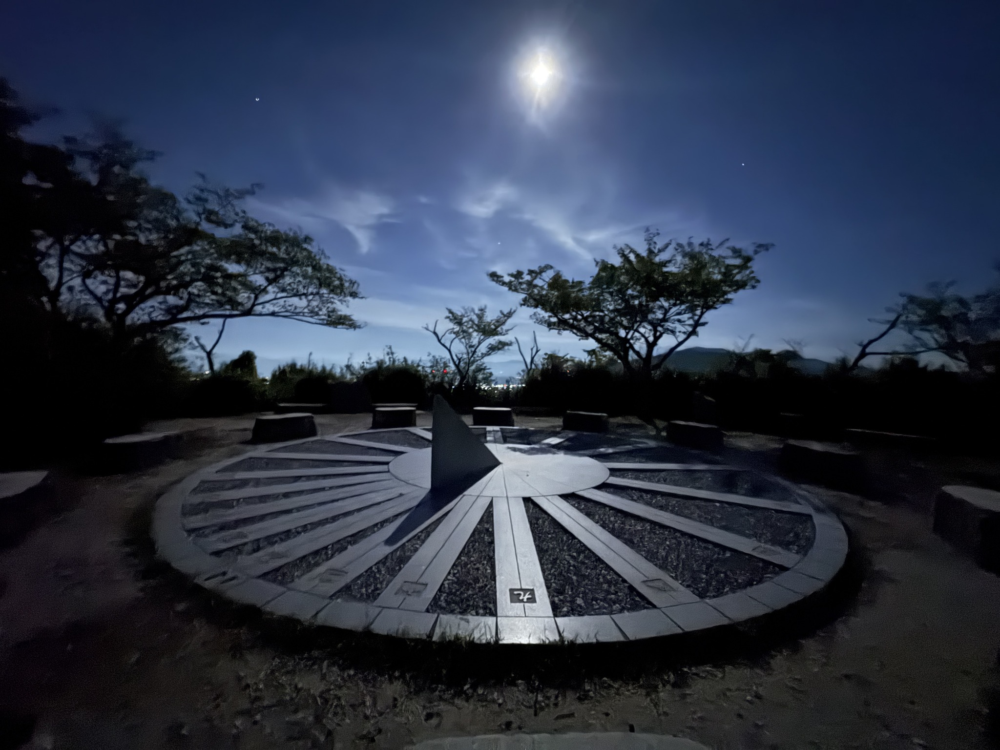
{kind=link}